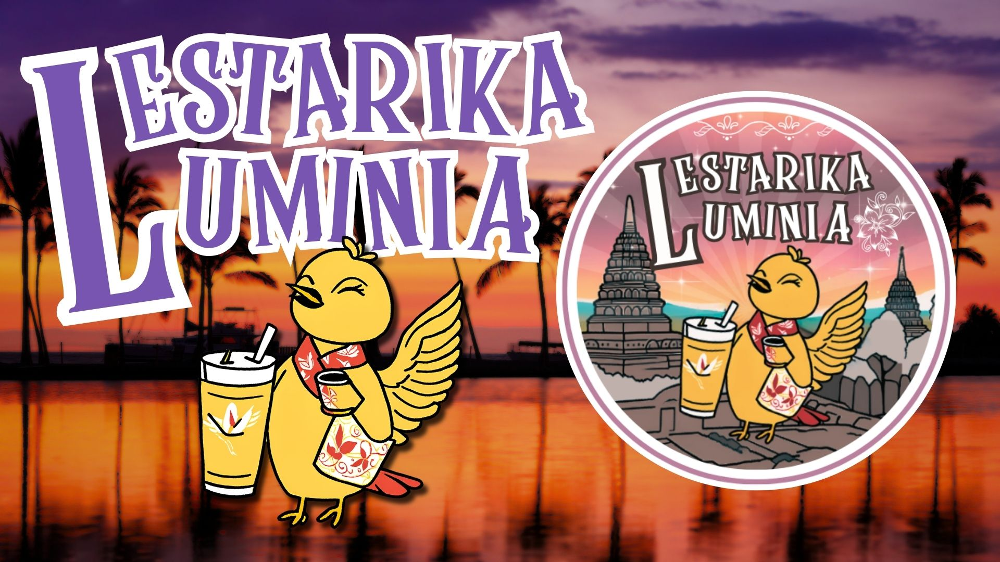
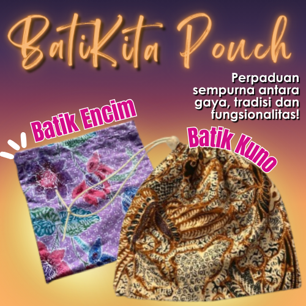
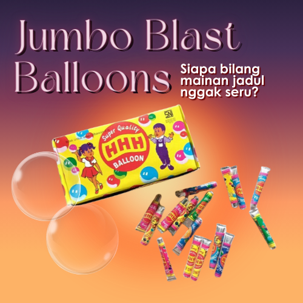
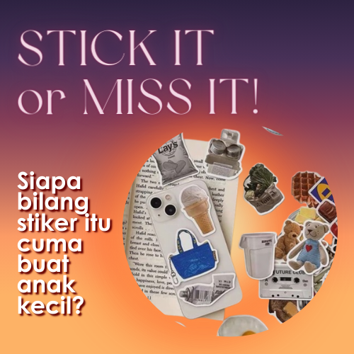
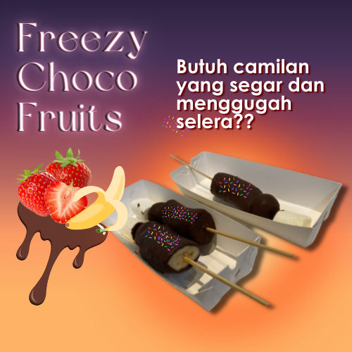
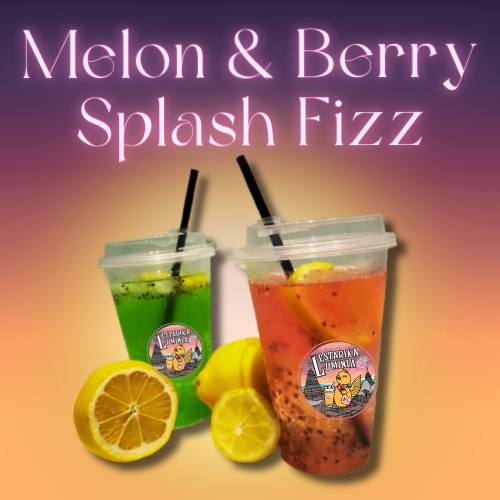
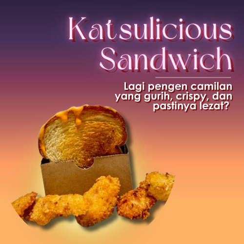
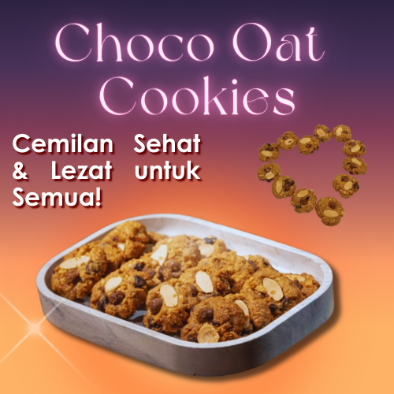
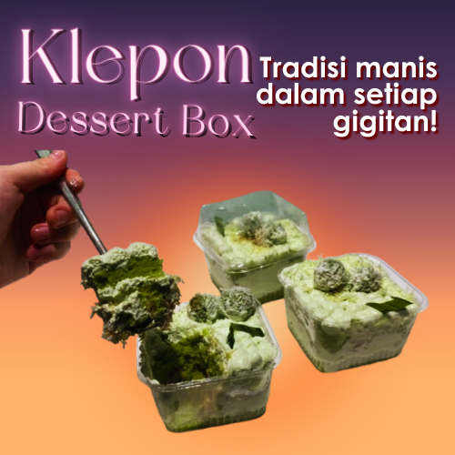
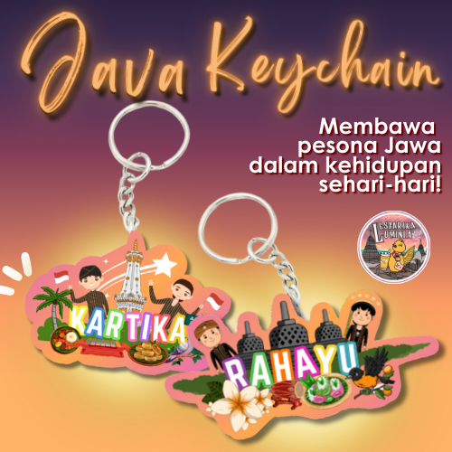

Memilih tema untuk toko sangat penting karena tema ini akan memberikan kesan pertama bagi pelanggan.
Tema yang tepat bisa membuat toko terlihat unik dan menarik, serta membedakan toko kami dari yang lain.
Tema juga menggambarkan apa yang ingin kami sampaikan kepada pengunjung. Kami sering berdiskusi dan
saling memberikan ide untuk memastikan bahwa tema yang kami pilih sesuai dengan keinginan kelompok.
Awalnya, kami berencana menggunakan tema "warung" karena ingin memberikan kesan tradisional dan familiar.
Namun, setelah melihat banyak toko lain yang juga memilih tema ini, kami merasa tema tersebut terlalu
umum dan tidak cukup menarik. Kami pun mulai mencari tema lain yang lebih unik dan berbeda. Kami sempat
memiliki ketidaksetujuan karena ada salah satu anggota kelompok yang tetap ingin bertema warung. Namun,
setelah berdiskusi lebih lanjut, kami setuju kepada tema "Jawa Tengah" karena budaya Jawa Tengah yang
kaya dan menarik. Kami ingin toko kami memperkenalkan budaya ini dengan cara yang lebih modern dan
menarik.
Kami memilih burung kepodang emas sebagai maskot karena burung ini melambangkan keindahan dan kelestarian
alam Jawa Tengah. Selain itu, kami juga memilih tema sunset yang memberikan kesan tenang, serta Candi
Borobudur sebagai simbol kebanggaan budaya Jawa. Kami juga menambahkan elemen wayang dan bunga kantil
untuk menggambarkan seni tradisional Jawa yang penuh makna.
Untuk melengkapi konsep toko kami, kami memerlukan nama. Bagian ini sangat sulit, karena mencari nama
yang sesuai dan bagus maknanya itu sulit. Kami mencoba untuk menggabung-gabungkan kata dari bahasa
Inggris dan bahasa Indonesia, untuk memberikan kesan tradisional, tapi modern dan mudah dikenali di era
sekarang. Maka, kami memilih nama "Lestarika Luminia." Nama ini berasal dari gabungan dua kata, yaitu
"Lestarika" yang berasal dari bahasa Indonesia, yang terinspirasi dari kata “lestari”. Lestarika
bermakna menjaga atau melestarikan kekayaan budaya di Indonesia, dengan tambahan akhiran “-ka” yang
memberikan kesan tindakan aktif atau ajakan untuk melestarikan budaya bersama-sama. Juga kata “Luminia”
yang berasal dari bahasa Latin atau Inggris. Kata ini berakat dari “Luminious” yang berarti bercahaya
atau bersinar yang menggambarkan kecerahan dan keindahan. Nama ini mencerminkan tujuan utama toko kami,
yaitu melestarikan dan memperkenalkan budaya Jawa Tengah dengan cara yang terang dan menarik bagi
generasi masa kini. Dengan nama ini, kami ingin membawa semangat untuk menjaga kekayaan budaya agar
tetap hidup dan bersinar di tengah arus modernisasi.
Kami memilih nama ini karena mencerminkan nilai utama yang ingin kami sampaikan, yaitu pentingnya
melestarikan warisan budaya secara kreatif dan inovatif. Selain itu, nama ini juga memiliki nuansa
elegan dan mudah diingat, sehingga diharapkan dapat menarik perhatian pelanggan. Melalui "Lestarika
Luminia," kami tidak hanya menjual produk, tetapi juga menyampaikan cerita dan makna mendalam dari
budaya Jawa Tengah yang kaya dan beragam. Dengan tema ini, kami berharap toko kami bisa memberi kesan
tentang budaya Jawa Tengah yang kuat, tetapi tetap modern dan menarik bagi semua orang. Semua ide yang
muncul dari diskusi kami membuat konsep ini semakin jelas, dan kami yakin tema ini adalah pilihan yang
terbaik.

Perencanaan Produk-Produk awal
Kami awalnya berencana untuk menjual beberapa produk, baik yang berasal dari reseller maupun yang kami
buat sendiri. Produk-produk yang kami pikirkan termasuk kipas batik, mainan fidget, jepit bunga, es krim
sandwich, notebook PPKn budaya, Choco Oat Cookies, Pouch Batik, Tiup Balon Jadul, stiker, Es Kul-Kul,
Melon & Berry Splash Fizz, Klepon Dessert Box, Katsu Sandwich, Keychain (Kartika dan Rahayu), dan Photo
Booth. Namun, setelah dipertimbangkan lebih lanjut, beberapa produk akhirnya kami batalkan.
Memiliki perencanaan yang matang untuk toko sangat penting, karena hal ini akan membantu kami dalam
memilih produk yang tepat dan memastikan kami tidak menghabiskan waktu atau sumber daya untuk produk
yang kurang sesuai dengan tujuan kami. Kami perlu memastikan produk yang kami pilih dapat menarik
perhatian pembeli dan sesuai dengan minat pasar.
Kipas batik kami batalkan karena penjual di platform sudah tidak aktif. Mainan fidget kami putuskan
untuk tidak dilanjutkan karena harganya cukup mahal dan kami khawatir tidak banyak orang yang tertarik.
Jepit bunga kami batalkan karena banyak penjual lain yang juga menjual produk tersebut. Untuk es krim
sandwich, kami putuskan untuk mengganti ide tersebut karena ada kelompok lain yang juga menjual produk
yang sama. Terakhir, notebook PPKn budaya kami batalkan karena kesulitan dalam pembuatannya, serta
terdapat ide-ide lain yang lebih bagus.
Dengan perencanaan yang lebih matang, kami dapat lebih fokus pada produk-produk yang sesuai dengan minat
pasar dan memaksimalkan peluang sukses toko kami. Kami yakin langkah ini akan mempermudah kami dalam
menentukan produk yang tepat untuk dijual.
Produk-Produk Fix
Karena kami seringkali berdiskusi dan berencana yang terbaik, akhirnya kami mendapatkan list produk yang
terbaik dan paling kami percaya akan laris. Lumayan sulit dan lama untuk kami mendapatkan list produk
yang fix, karena tentu banyak sekali pertimbangan yang harus dipikirkan. Dari pembuatan produk,
pembelian bahan/alat yang diperlukan, harga beli bahan, harga jual produk, dan seberapa menarik produk
tersebut di komunitas sekolah. Karena perencanaan yang kuat, akhirnya kami memilih 11 jenis macam
produk-produk yang fix akan kami jualkan pada hari bazaar nanti.
BatiKita Pouch
Pouch Batik adalah tas kecil berserut yang terbuat dari batik tulis asli. Batik tulis asli
Nusantara
dan berasal dari Solo yang kami buatkan menjadi sebuah pouch serut. Kami menyiapkan dua pilihan
desain:
Pouch Batik Kuno Coklat
dari batik kuno yang memiliki motif tradisional dan klasik. Bermotif batik Sekar Jagad
adalah salah satu motif batik yang berasal dari Solo dan Yogyakarta. Motif ini
mengandung
makna aneka rupa keindahan yang terjalin menjadi satu atau melingkupi keseluruhan
keindahan.
Pouch ini berwarna dasar coklat muda, namun mencolok dengan warna tambahan putih dan
coklat
tua. Terlihat bahwa desainnya sangat rumit dan detil, memberikan khasnya motif sekar
jagad
dari solo yang tidak dimiliki oleh budaya lain.
Pouch Batik Encim Ungu
dari batik Encim asli Nusantara yang lebih modern dan elegan. Bermotif Encim, yaitu
yaitu
terdapat bunga-bunga, daun, dan dekorasi kecil berbentuk bunga. Motif batik ini
memberikan
makna kekayaan akan harmoni budaya antara Indonesia dengan masyarakat Tionghoa. Pouch
ini
berwarna dasar ungu muda, dan warna-warna tambahan seperti merah muda, ungu tua, hijau,
biru, dan putih.
Kedua pouch ini menggabungkan kekayaan makna dan desain batik Indonesia yang indah, penuh cerita
moral. Terbuat dari batik asli, pouch ini kuat, praktis, dan bisa membawa banyak barang. Cocok
sebagai hadiah atau oleh-oleh unik dengan kualitas dan manfaat luar biasa.

Jumbo Blast Balloons
Tiup Balon Jadul adalah sebuah mainan balon klasik yang memberikan nostalgia jaman dahulu sebagai
anak kecil saat memainkannya. Balon ini seringkali dimainkan saat pesta ulang tahun atau hanya
untuk
kesenangan pribadi. Produk ini memberikan hiburan yang menyenangkan dan mudah digunakan dalam
berbagai situasi.

Tiup Balon ini dimainkan dengan cara meniup sedotan kecil yang memiliki cairan
kental yang membuatnya menjadi balon. Kami memilih untuk menjualkan produk ini karena banyak
sekali
anak-anak SD yang akan suka bermain dengan balon-balon ini. Kami membeli tiup balon jadul ini
dalam
jumlah besar, yaitu 100 pcs, kemudian kami jualkan per paket yaitu 5 biji. Hal ini memberikan
kami
untung yang besar.
Stick It or Miss It
Stiker yang memberikan gambar-gambar lucu, desain yang menarik dan modern. Stiker ini seringkali
digunakan untuk menghias berbagai barang, seperti laptop, handphone, atau buku catatan. Kami
ingin
menjual stiker ini karena pasti banyak sekali anak remaja yang suka mendekorasi barang-barang
miliknya dengan stiker-stiker lucu.

Kami membelinya dalam jumlah besar juga, sehingga kami
menjualnya murah. Kami juga memberikan kebebasan bagi para pembeli untuk memilih desain
stikernya
masing-masing. Desain stiker yang beragam membuat produk ini dapat disesuaikan dengan selera
pribadi
pembeli dan dapat memberikan sentuhan unik pada barang-barang milik pengguna.
Freezy Choco Fruits
Es Kul-Kul adalah camilan es yang terbuat dari bahan utama pisang dan strawberry yang ditancapkan
pada stik, kemudian diberi marshmallow di atasnya dan dilapisi dengan coklat leleh. Camilan es
ini adalah jajanan jaman dahulu yang digemari oleh anak-anak remaja. Camilan ini memiliki rasa
yang manis dan menyegarkan.

Es Kul-Kul cocok sebagai pilihan camilan praktis yang unik, dengan
tekstur yang dingin dan kenyal yang rasa yang lezat, menjadikannya pilihan yang tepat untuk
camilan sehari-hari yang lebih sehat dari makanan manis lainnya karena nutrisi yang terkandung
pada buah-buah tersebut.
Melon & Berry Splash Fizz
Melon & Berry Splash Fizz adalah dua pilihan minuman bersoda yang menyegarkan, masing-masing
terbuat dari sirup melon dan sirup berry. Setiap rasa menawarkan sensasi yang unik. Sirup melon
memberikan rasa manis dan segar, sementara sirup berry memberikan rasa buah yang lebih kuat dan
sedikit asam yang memberikan keseimbangan rasa yang menyegarkan.

Kedua minuman ini dilengkapi
dengan irisan lemon yang memberikan rasa asam segar dan biji selasih yang menambah tekstur unik
saat diminum. Minuman ini dirancang untuk memberikan pengalaman rasa yang segar dan berbeda,
ideal untuk menemani pembeli dalam mengikuti acara bazar dan pertunjukan pensi ini. Dengan
pilihan rasa melon yang manis dan berry yang asam, keduanya menjadi pilihan tepat untuk
menyegarkan badan dalam cuaca panas pada hari siang yang terik sekali.
Katsulicious Sandwich
Katsu Sandwich adalah roti panggang yang diisi dengan katsu renyah, saus mentai kami, dan keju
slice yang meleleh sempurna. Roti yang dipanggang dengan pas memberikan tekstur renyah,
sementara katsu dan saus mentai menambah rasa gurih dan creamy.

Sandwich ini cocok untuk dimakan
pada saat menonton drama di aula. Perpaduan rasa gurih dari katsu, saus mentai, dan keju bersama
roti panggang yang renyah menciptakan pengalaman makan yang memuaskan dan nikmat.
Choco Oat Cookies
Choco Oat Cookies adalah kue kering bebas telur yang kami buat sendiri menggunakan bahan-bahan
berkualitas, seperti gandum atau oats yang kaya akan serat. Kue ini dilengkapi dengan potongan
almond dan chocochip di atasnya, memberikan tambahan tekstur dan rasa yang lebih kaya. Kue ini
dijamin sehat karena terbuat dari bahan-bahan alami dan tidak mengandung gula berlebih, sehingga
rasanya tidak terlalu manis.

Kami merancang Choco Oat Cookies untuk mereka yang menginginkan camilan manis namun tetap ringan
dan sehat. Dengan kombinasi gandum, oats, almond, dan chocochip, kue ini menawarkan cita rasa
yang lezat dan kenikmatan yang tidak berlebihan, cocok untuk dinikmati kapan saja tanpa khawatir
berlebihan.
Klepon Dessert Box
Kami menghadirkan klepon dalam bentuk dessert box yang memadukan tradisi dan modernitas, mengubah
tampilan klepon tradisional menjadi lebih kekinian dan estetis. Juga menghadirkan dessert box
yang akhir-akhir ini viral sekali dengan rasa coklat, stroberi, dan lain-lain.

Namun, justru
kami menghadirkan dalam rasa klepon yang memberikan kesan tradisional dan modern bersamaan.
Klepon Dessert, yang terbuat dari ketan dengan isian gula merah cair dan kelapa parut, dipilih
karena sudah akrab di lidah masyarakat dengan cita rasa manis dan kenyal. Dengan desain praktis
dan menarik, produk ini dapat menjadi favorit berbagai kalangan yang ingin menikmati nuansa
nostalgia dengan sentuhan modern.
Java Keychains
Keychain ini hadir dengan dua pilihan desain, yaitu Kartika dan Rahayu. Desain keychain ini kami
buat dengan detail yang menarik, sehingga cocok untuk digunakan sebagai gantungan kunci atau
aksesoris tambahan pada tas. Keychain ini memberikan makna penuh akan kekayaan budaya yang
dimiliki jawa tengah.

Sebagai produk PPKN, tidak hanya keychain ini memiliki gambar dan desain
menarik, tapi juga tulisan moral di bagian belakangnya. Keychain ini dapat menjadi pilihan
hadiah yang personal dan fungsional, serta memberikan sentuhan estetika pada barang-barang
sehari-hari.
Snap, Smile, N Pose
Photo booth di bazaar ini menggunakan kamera Instax untuk menghasilkan foto langsung jadi,
dilengkapi dengan frame kreatif lucu yang memberikan kemenarikan dalam hasil fotonya. Cocok
untuk menyimpan memori penting dan momen seru dengan teman-teman di acara bazaar. Foto yang
dihasilkan bisa langsung dibawa pulang sebagai kenang-kenangan yang menarik, membuat pengalaman
di bazaar semakin berkesan dan menyenangkan.